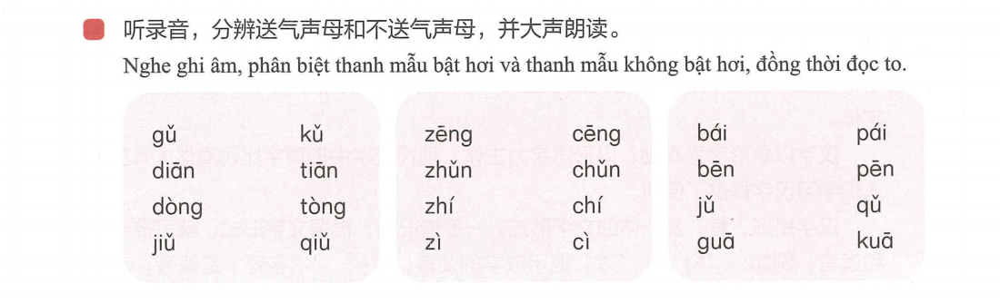
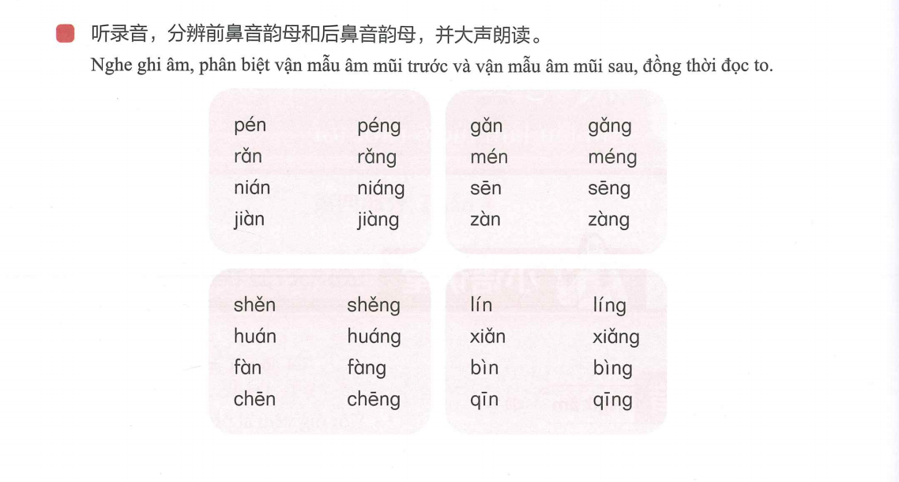
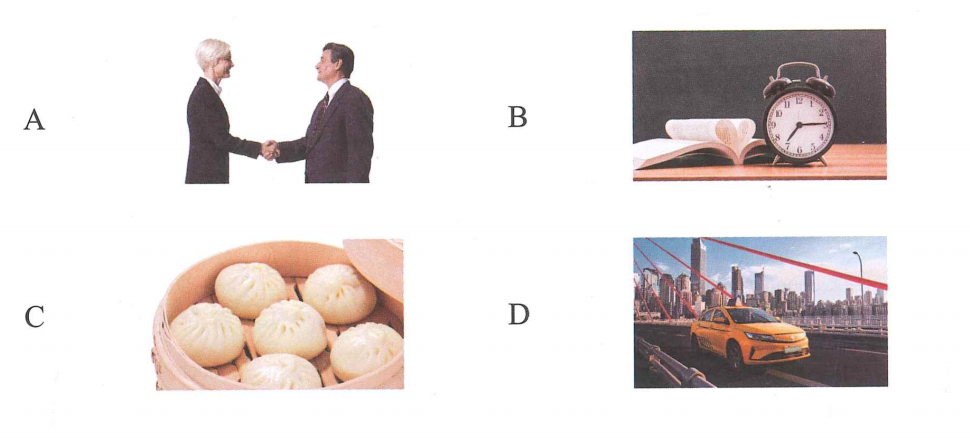
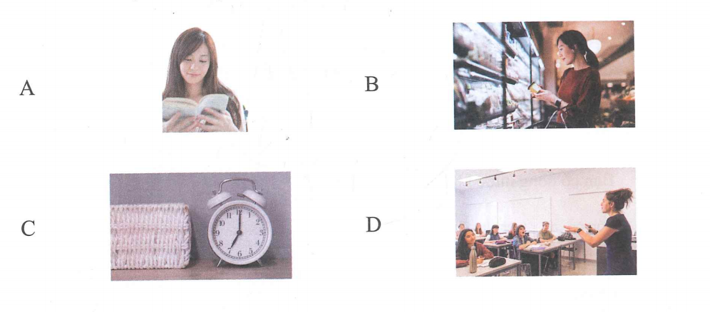

1.
Bài 7 · 第七课
我晚上六点半下班
Em tan làm lúc 6 giờ rưỡi tối.
一、语音 · Ngữ âm
1. Thanh mẫu bật hơi và không bật hơi
Khi phát âm, hãy chú ý phân biệt các cặp thanh mẫu không bật hơi và bật hơi.
| Không bật hơi | Bật hơi | Không bật hơi | Bật hơi | Không bật hơi | Bật hơi |
|---|---|---|---|---|---|
| b | p | d | t | g | k |
| j | q | zh | ch | z | c |
🔊 Luyện thanh mẫu bật hơi

2. Vận mẫu mũi trước và vận mẫu mũi sau
Vận mẫu mũi trước kết thúc bằng -n; vận mẫu mũi sau kết thúc bằng -ng. Nghe và đọc rõ sự khác biệt.
🔊 Luyện -n và -ng

二、汉字 · Chữ Hán
Giới thiệu khái quát về chữ Hán
Chữ Hán có nguồn gốc từ Trung Quốc, đồng thời cũng là hệ thống chữ viết duy nhất được sử dụng liên tục từ thời cổ đại cho đến ngày nay. Đây là một trong những hệ thống chữ viết lâu đời nhất trên thế giới.
Chữ Hán là hệ thống ký hiệu dùng để ghi chép tiếng Hán. Trong lịch sử phát triển của mình, chữ Hán đã trải qua các hình thức như chữ Giáp cốt, chữ Kim, chữ Triện, chữ Lệ, chữ Khải, chữ Thảo và chữ Hành. Đến nay, những loại hình chữ viết này vẫn được sử dụng trong nghệ thuật thư pháp. Trong đó, chữ Khải được xem là kiểu chữ chuẩn của chữ Hán hiện đại.
Chữ Hán được hình thành trên cơ sở chữ tượng hình, trong đó chữ hình thanh chiếm tỷ lệ lớn nhất. Trong hệ thống chữ Hán hiện đại, chữ hình thanh chiếm khoảng 90% tổng số chữ, tạo điều kiện thuận lợi cho người học trong quá trình nhận biết và ghi nhớ chữ Hán.
Chữ Hán là hệ thống chữ viết kết hợp giữa hình thể, âm đọc và ý nghĩa. Trong nhiều trường hợp, người học có thể suy đoán cách đọc và ý nghĩa thông qua hình thể của chữ. Ví dụ: ở chữ 材, 才 gợi cách đọc, còn 木 (bộ Mộc) biểu thị ý nghĩa liên quan đến cây cối; ở chữ 花, 化 gợi cách đọc, còn 艹 (bộ Thảo) biểu thị ý nghĩa liên quan đến thực vật, cây cỏ.
Trong thời đại số, cùng với sự phát triển của công nghệ, các phương thức nhận diện và học chữ Hán thông qua hệ thống phiên âm Pinyin ngày càng đa dạng. Điều này giúp người học tiếp cận chữ Hán thuận lợi hơn, nâng cao khả năng nhận biết chữ Hán và phát triển năng lực đọc hiểu tiếng Hán.
三、听力 · Phần nghe
🔊 File nghe hoàn chỉnh · Câu 1–10
第一部分 · Câu 1–3
请选择正确的图片。
Ví dụ: 三个苹果

 Đáp án ví dụ: C
Đáp án ví dụ: C
2.
3.
第二部分 · Câu 4–5
Ví dụ:
今天天气怎么样？
A. 非常热B. 很好听C. 在喝水
Đáp án ví dụ: A4.
5.
第三部分 · Câu 6–8
Ví dụ:Đáp án ví dụ: A
女
你好！
男
你好！很高兴认识你。

6.
7.
8.
第四部分 · Câu 9–10
Ví dụ:
下午我去超市，我想买一些水果。
★ 说话人下午去哪儿？
A. 超市B. 医院C. 学校
Đáp án ví dụ: A9.
10.
四、阅读 · Phần đọc
第一部分 · Câu 11–13
Ví dụ: 我很喜欢这本书。 → A

11. 我在上课呢。
12. 我下午有事，晚上7:00见吧。
13. 今天不上班，我去超市买东西。
第二部分 · Câu 14–16
A. 早上七点半。B. 对不起，我有课。C. 电影院。D. 好的，谢谢！
Ví dụ: 你喝水吗？ → D
14. 我们在哪儿见？
15. 现在几点？
16. 我们下午去超市吧。
第三部分 · Câu 17–18
A. 医院B. 中午C. 名字
Ví dụ: 你叫什么（C）？
17. 我们（ ）12:00下课。
18.
男
你现在在哪儿？
女
我在（ ）呢。
第四部分 · Câu 19–20
Ví dụ:
请问现在几点了？
★ 说话人想知道什么？
A. 时间B. 名字C. 房间号
Đáp án ví dụ: A19.
我今天早上八点半上课，十点十分下课。
★ 说话人今天几点下课？
20.
妈妈今天休息，下午想去菜店买些菜。
★ 妈妈下午想去菜店买什么？